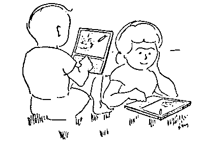

So, why not X86 assembly? While some of our computers share an architecture, cross-platform audio and graphical development is unlikely to work between them.
A virtual machine
Emulation is the reproduction of the behavior of a physical computer's
circuitry with software. Given that an emulator can translate the actions of
one computer onto an other, the same program can sometimes be used on both.
This is called emulation.
Someone could devise the actions of a fictional computer that is not
necessarily based on existing hardware, write software for this fantastical
computer, implement an emulator for it, and use the same program on
supported systems.
This is called a virtual machine.
Bitrot is the inability to access digital data because hardware and software no longer exist to read its format. Over the years, I wrote software for a multitude of peripherals and frameworks, the vast majority is now defunct due to either falling behind on the ever-changing toolchains or simply the hardware being discontinued. Perhaps it's just a matter of time until people build emulators to make these projects usable again, otherwise these projects were never truly mine, and my learning of these languages only ever belonged to the platforms.
I. An Adequate Number Of Bits
During my research into portability, I kept thinking about how frictionless it is to play classic console games today. Pulling on that thread led me to projects designed explicitly for virtual machines, such as Another World which is equally easy to play today due to its targeting of a portable virtual machine, instead of any ever-changing physical hardware.

For a time, I thought I ought to be building software for the NES to ensure their survival against the wave of disposable modern platforms — So, I did. Unfortunately, most of the software that I care to write and use require slightly more than an 8-button controller.
So, why not the Commodore 64? Having implemented a NES emulator I found that, in comparison, implementing a c64 emulator is a monumental project.
II. Tarpits & Houses Of Cards
If the focus of this experiment is to ensure the support of a piece of code by writing emulation software for each new platform, the specifications should be painless to implement. Let's use the time one would need to write a passable emulator as a limit in complexity for this system. Could a computer science student implement an emulation of the 6502 instructions in an afternoon? Could that design be simplified, changed in some way to make it more approachable for would-be implementers?

- Subleq is a One-Instruction architecture which takes at most a day for one person to implement. But what it does away in emulation complexity, it offloads onto the toolchain needed to make intelligible programs.
- Smalltalk is a complete computing environment and virtual machine, that was said to take about a year for one person to implement.
So, let us also set a limit to the complexity of the toolchain, since it would be an equally Herculean task to build an emulator and assembler for a machine with thousands of instructions; or a single instruction machine building abstract logic from thousands of primitive parts.
The complexity of our virtual machine runtime and toolchain implementation cannot exceed that which can be done within a weekend.
So, why not the Chifir? Because of its very incomplete specification, unspecified behaviors, and lack of testing software, it is doubtful that general purpose computing is possible on such a system.
III. Things Betwixt
In 1977, a programmer wrote a small virtual machine with 36 instructions, 16 registers and 4096 bytes of memory. It had no mouse device, its controller is 16 keys organized in a square, the screen is barely capable of displaying readable text, but I was able to write an implementation in a weekend.
In 1964, a computer scientist proposed an abstract machine with 10 instructions and 4 stacks. The superficially documented implementation specifies a list processing system capable or hosting functional languages. The system was later expanded with arithmetic and IO operations, but rests on an intricate and inefficient garbage collected system. I was able to write an implementation in about two weeks.
In the early 1980s , when computer access was still not yet widespread, a paper computer was designed, consisting of a piece of paper with 21 lines of code and eight registers. The instruction set of five commands(inc, dec, jmp, isz, stp) is small but Turing complete, meaning that it can approximately simulate the computational aspects of any other real-world general-purpose computer, and is therefore enough to represent all mathematical functions.
So, why not Pico-8? The Pico-8 comparison comes from people conflating Uxn with Varvara. A better comparison would be Uxn and the LuaVM, which runs Pico-8, but isn't intended to be targeted directly and subject to change. On the other hand, Uxn is a VM focused on long-term stability, implantability, and portability.

Somewhere along this voyage into finding a suitable host for my programs, I began thinking about electronic waste, and I couldn't justify surrounding myself with yet more electronics. This dream platform would therefore be designed to be emulated, its complexity would be designed around the complexity of software and not that of hardware, so I do no consider FPGAs.
IV. Back & Forth
The balancing act of virtual machine instructions, assembler, emulator and the resulting capabilities of its language eventually brought me back to stack machines.

Concatenative languages consist of breaking a program into a list of words, and to interpret each word, words are often combinations of other words, combined to create more complex words. Brackets and parentheses are unnecessary: the program merely performs calculations in the order that is required, letting the automatic stack store intermediate results on the fly for later use. Likewise, there is no requirement for precedence rules.
| operation | 3 | 10 | 5 | + | * |
|---|---|---|---|---|---|
| stack | 3 | 10 | 5 | 15 | 45 |
| 3 | 10 | 3 | |||
| 3 |
In Forth, memory is made of blocks of cells, which
are typically 16-bits in length, meaning that each
piece of data is a number from 0 to 65535. For this specific imaginary system,
I wanted the memory to consist of cells of 8-bit, or numbers from 0 to 255. For
example, the 12 / (34 - 12) sequence is equivalent to the 6
bytes:
uxntal | # 12 34 OVR SUB DIV binary | a0 12 34 07 19 1b
Using stack-machine operations as primitives, along with enough arithmetic and bitwise functions as to not require to abstract computation to a higher level language, in order words to keep the assembly programming pleasant with convenience opcodes such as multiplication and division, I reached an expressive and extendable virtual machine that can be implemented in a weekend exposing a programmable assembly dialect running at a reasonable speed.
Stack I Logic Memory I Arithmetic BRK -- EQU a b -- a=b LDZ abs8 -- [abs8] ADD a b -- a+b INC a -- a+1 NEQ a b -- a≠b STZ val abs8 -- SUB a b -- a-b POP a -- GTH a b -- a>b LDR rel8 -- [rel8] MUL a b -- a×b NIP a b -- b LTH a b -- a<b STR val rel8 -- DIV a b -- a÷b Stack II Stash Memory II Bitwise SWP a b -- b a JMP addr -- LDA abs* -- [abs*] AND a b -- a&b ROT a b c -- b c a JCN cond8 addr -- STA val abs* -- ORA a b -- a|b DUP a -- a a JSR addr -- | pc* DEI dev -- [dev] EOR a b -- a^b OVR a b -- a b a STH a -- | a DEO val dev -- SFT a sft8 -- res LIT -- [pc*] JCI cond8 -- JMI -- JSI -- | pc*
An implementation of the runtime, capable of running the self-hosted assembler is about 150 lines of C. Uxn cannot error and has no unspecified behaviors. Its documentation encourages re-implementation instead of adoption of a specific implementation. It operates on bytes as to remain portable on small systems, abstracting I/O entirely to the host system via dedicated opcodes.